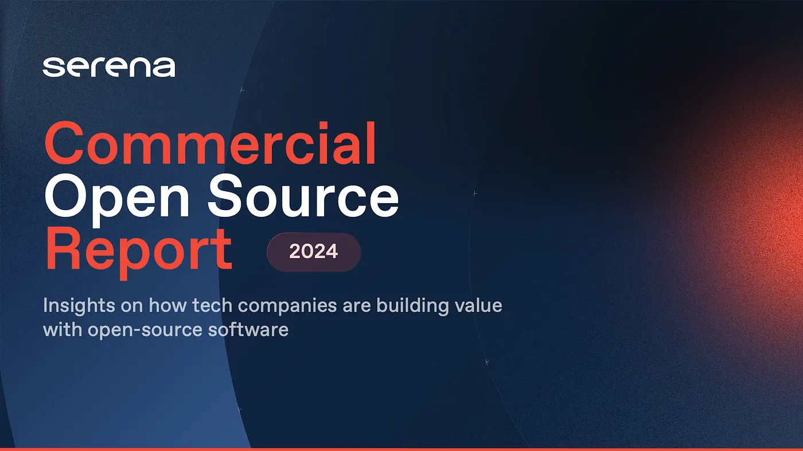

Introducing the 2024 Report
Insights on how tech companies are building value with open-source software

Open-source software has fundamentally reshaped the technological landscape, powering critical systems including operating systems, databases, and AI models. The fusion of the open-source ethos with commercial strategy is what ensures its longevity. Yet for founders, investors, and IT buyers, determining the commercial viability of open-source projects remains a significant challenge.
This report examines VC-backed commercial open-source (COSS) companies, exploring market share, funding trends, community engagement, and the interplay between financial backing, community popularity, and strategic alignment with foundations.
Key Findings
1. Market Share and Regional Funding Dynamics
- Commercial open-source companies represent roughly 10% of the top GitHub projects — and are 50x more likely to land in that top chart than purely free and open-source (FOSS) projects.
- The United States accounts for 82% of VC funding for COSS ventures.
- EMEA's share rose sharply from 4% to 30% between 2020 and 2023, driven largely by AI ventures.
- The rising VC market share signals growing confidence among investors in the economic prospects of these companies.
2. Community Visibility vs. Economic Viability
There is only a weak correlation between community metrics (GitHub stars, contributors) and economic potential (VC funding). A project's popularity within the developer community does not necessarily equate to its attractiveness to investors.
- Some of the best-funded COSS companies lack a correspondingly large GitHub following.
- Conversely, financial investment does not guarantee vibrant community engagement.
- Community metrics and financial backing should be evaluated independently.
A project's popularity within the developer community does not necessarily equate to its attractiveness to investors.
3. The Impact of Company Seniority on Community Engagement
Company age correlates more strongly with community visibility and contribution than the amount of funding raised. Older COSS companies tend to maintain more loyal, active communities — an effect attributable to established trust and reliability built over time.
4. The Role of Foundations in Open-Source Projects
Nearly half of the established, well-funded projects either donate their core technologies to foundations or build their commercial offerings atop a foundation-governed core.
- Foundations provide a neutral governance environment and enhance credibility.
- Foundation engagement is viewed favorably by investors and increases the likelihood of funding success.
5. Trends in Licensing Choices
Permissive licenses remain the favorite in the COSS community, enabling frictionless integration into proprietary products. This choice aligns with top-of-funnel adoption objectives. Non-OSI licenses represent under 10% of the landscape.
Read the Full Report
The complete Commercial Open Source Report 2024 is available here. For the latest edition and ongoing research, visit cossreport.com.
About Serena
Serena is a European venture fund managing $750 million, founded in 2008. The firm invests from seed to Series A, supporting entrepreneurs across AI, SaaS, Climate Tech, Digital Transformation, and Impact. Serena operates Europe's largest operational support team and the Serena Squad community of 550+ active executives. Notable portfolio companies include Dataiku, Malt, The Fork, Electra, Descartes Underwriting, Accenta, Lifen, and AramisAuto.